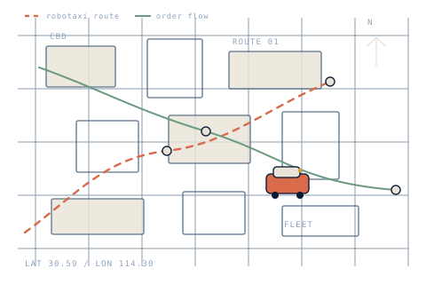

需新增 Robotaxi
按情景压力敏感性
压力 × 净替代系数 → 需新增 Robotaxi情景明细
文字摘要
数据与假设
假设与局限
- 需求并非线性：低价或供给增加可能诱导新增出行，实际替代量可能偏离。
- 单车日均订单、利用率与运营半径会随城市与政策变化，需用本地数据校准。
- 政策许可、事故责任、充电与维护成本未在模型中内生。
- 订单替代比例 0.27 为论文校准参数，默认视为已内化进情景压力。
本工具是情景计算器，不是预测器，也不构成投资或入局建议。

本工具是情景计算器，不是预测器，也不构成投资或入局建议。